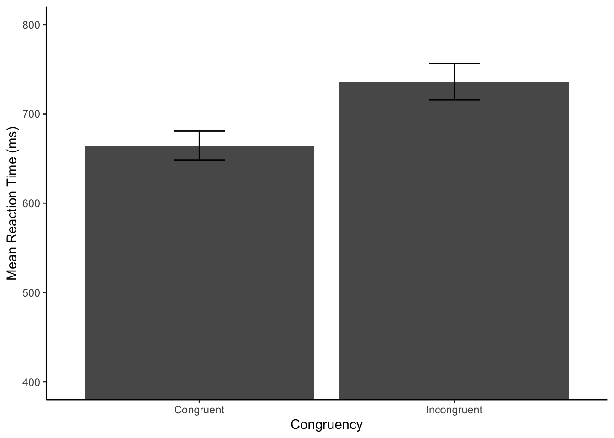
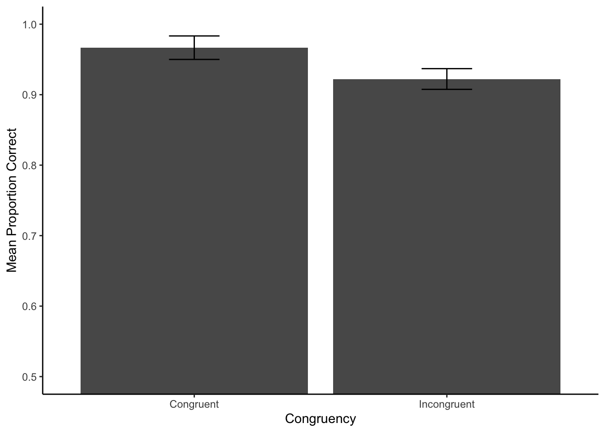

# install from the Packages tab, or run the below in the console once.
#install.packages('tidyverse')
#install.packages('rio')
# load libraries
library(tidyverse)
library(rio)
# get data file names
file_names <- list.files("data",full.names = TRUE)
# initialize data frame to hold individual subject data
all_data <- tibble()
# loop through each file and import
for(i in 1:length(file_names)) {
# import a single data file to a temporary data frame
temp_df <- rio::import(file_names[i]) %>%
mutate(subject = i)
# append the single subject data to larger data frame
all_data <- rbind(all_data,temp_df)
}Week 5: Analyzing data from a Stroop experiment in R
Psyc 2001
Stroop
R
Last week we programmed a basic Stroop experiment using jspsych, and this week we take a quick look at analyzing the data using R.
Pre-requisites:
Have followed along from the previous posts.
Screencast
Concepts to cover
I’ll cover the following concepts in the screencast and show how I am using software as I go along.
piloting an experiment
saving data
- copy from the screen
- save to csv
quick R review
- obtaining necessary packages
- R code chunks
Scripting the analysis
- load the data into T
- tidyverse pipeline to get individual subject means in all conditions
- group means
- plotting the data using ggplot2
R Resources
We did not spend much time introducing R. Hopefully the screencast is enough to get you started with the example scripts below.
Here are some additional resources for learning R.
Assignment
Obtain the sample data from this tutorial (you can get them from the github repository for this blog). Show that you can conduct the analysis in your blog post.
Create pilot data from your own Stroop experiment by running yourself as a participant a few times.
Analyse the data in R by modifying the example scripts as necessary.
Example code
The following example code shows some minimal examples for analyzing RT and accuracy data from a basic Stroop experiment.
Loading libraries and importing data
Reaction time analysis
Goal: get individual subject mean reaction times for correct trials. Create a plot
# pre-process and filter rows
filtered_data <- all_data %>%
filter(task == "stroop",
correct == "TRUE") %>%
mutate(rt = as.numeric(rt))
# get individual subject means in each condition
subject_mean_RT <- filtered_data %>%
group_by(subject,congruency) %>%
summarize(mean_rt = mean(rt), .groups = "drop")
# get group means in each condition
group_mean_RT <- subject_mean_RT %>%
group_by(congruency) %>%
summarize(mean_reaction_time = mean(mean_rt),
sem = sd(mean_rt)/sqrt(length(mean_rt))
)
# plot
ggplot(group_mean_RT, aes(x=congruency,y=mean_reaction_time)) +
geom_bar(stat="identity") +
geom_errorbar(aes(ymin=mean_reaction_time-sem,
ymax=mean_reaction_time+sem),
width=.2) +
ylab("Mean Reaction Time (ms)") +
xlab("Congruency")+
coord_cartesian(ylim=c(400,800)) +
theme_classic()

Accuracy analysis
Goal: get individual subject proportion correct. Create a plot
# pre-process and filter rows
filtered_data_pc <- all_data %>%
filter(task == "stroop")
# get individual subject proportion correct values
subject_pc <- filtered_data_pc %>%
group_by(subject,congruency) %>%
summarize(proportion_correct = mean(correct), .groups = "drop")
# get group means in each condition
group_mean_pc <- subject_pc %>%
group_by(congruency) %>%
summarize(mean_proportion_correct = mean(proportion_correct),
sem = sd(proportion_correct)/sqrt(length(proportion_correct))
)
# plot
ggplot(group_mean_pc, aes(x=congruency,y=mean_proportion_correct)) +
geom_bar(stat="identity") +
geom_errorbar(aes(ymin=mean_proportion_correct-sem,
ymax=mean_proportion_correct+sem),
width=.2) +
ylab("Mean Proportion Correct") +
xlab("Congruency")+
coord_cartesian(ylim=c(0.5,1)) +
theme_classic()
